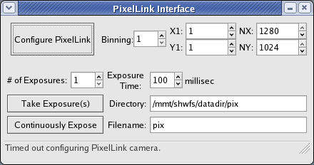

Please note that the Apogee science
camera is currently dead which is why the buttons that affect it are
greyed out. This window is divided into 5 main sections:
- Stage Motion -- Buttons
to Stow the WFS, move it on axis, or move it to a specified position.
- Camera Selection -- One
selection moves the camera stage to select between the WFS and science
camera and the other moves the WFS's internal reference source in and
out of the beam. Currently, neither of these is used during
normal operations. The science camera is defunct and WFS
reference images have been shown to be very stable over time.
- Science Camera Config --
Not used until the science camera is replaced.
- Camera Cooling -- Toggle
and monitor the cooling of the WFS camera.
- Image Acquisition -- Set
up and take exposures as in the F/9 interface. Setting filename
to test will force it to
save every image as test.fits.
Any other filename will be automatically numbered so that no data gets
overwritten.
Less frequently used windows are brought up from the Control menu found
on the main window's menubar. The menu entries and windows are:
- Power On/Off
|
The top six buttons in this
window toggle power switches within the WFS. The bottom two
communicate with the Pulizzi switches in the 2nd floor instrument room to
toggle power to the WFS computer and WFS drives. Be very careful
not to inadvertently turn them off!!!
|
- Run PixelLink

|
The PixelLink camera is
pretty fussy about its configuration, especially binning, so you'll
likely want to leave the defaults alone. You may want to change
the exposure time (200-250 millisec is about the maximum it will
accept), but you shouldn't need to for most WFS stars unless they are
way out of focus. Occasionally the first image taken after
changing exposure time is corrupted, but subsequent frames should be
fine. Under normal use the directory and filename should be left at
their default values.
|
- Configure WFS

|
You should only need to use
this window at the beginning of the night to home the WFS after a full
shutdown and then set the stage motor configurations to their Hecto or
MegaCam defaults.
|
- WFS Catalog
|
This window allows you to
search the entire Tycho2 catalog (which is complete to fainter than
11th magnitude) for nearby WFS stars within a specified radius in
degrees. This interface is significantly faster at searching than
the scope window and should save time spent juggling between observer
and WFS catalogs. You can either type in search coordinates (J2000) by
hand and click 'Find at Specified Coordinates' or click 'Find at
Current Telescope Catalog Position' to query the current catalog
coordinates in the mount. This will store these coordinates
internally as well as any mount offsets. After finding a set of stars,
you can click on the column headings to sort by the various
columns. Click on a star to highlight and select it and then 'Go
to Selected Star' to turn the rotator off and send the telescope there. Clicking 'Return
to Previous Position' will send the telescope back to the stored
catalog coordinates, turn the rotator back on, and reapply the stored mount offsets.
|
- WFS Computer
|
This is a VNC viewer window
that displays the console of the WFS computer. You need to access
this to start the WAVESERV and WAVECAMR servers after a full
shutdown. Check with T. Pickering if you need the VNC
password. The hostname for the WFS computer is f5wave and its IP number is
192.168.1.150.
|
- WAVEdisplay
|
This is the SAO engineering
interface to the WFS systems. It is not necessary to use
normally, but it can be useful for monitoring what's going on and for
debugging things if something's not working quite right.
|
Start-up Procedure after Partial Shutdown
- Bring up the F/5 wavefront sensor interface from the MMTO menu.
- If the WFS computer can't be reached, the F/5 WFS Interface
window will report that it failed to connect. This will be the
case after a full shutdown, but hopefully not after a partial shutdown.
- If no errors are reported, bring up the Power window to make sure
everything is on. Turn Servo and Encoder Power on if they are
off. Close the Power window once everything is turned on.
- Turn on the cooling for the WFS camera. The temperature
should start to update within 5-10 seconds or so.
- Bring up the WFS Configuration window and click 'Home WFS' to
home and initialize the system. It is not strictly necessary to do this
after a partial shutdown, but it doesn't hurt to do it.
- After the WFS is homed, click on the appropriate button to set
the stage motors to either the Hecto or MegaCam default
configuration. Once that's done, the WFS Configuration window can
be closed.
- Bring up the PixelLink window and take an exposure to test
communication with that camera. Likewise, take a test exposure
with the WFS camera to make sure it's working properly as well. The
PixelLink window can be left open for later use or closed and brought
back up from the menu as needed.
Start-up Procedure after Full Shutdown
- Check to make sure the UPS and Pulizzi switches in 2nd floor
instrument lab are plugged in and turned on. The two Pulizzi
switches used for the WFS are
P5-5 labeled "WFS CTRL AC"
(WFS computer power) and
P7-3 labeled "WFS DRV AC" (WFS
drive power).
Also make sure the ESTOP power
is on (switch P5-4 labeled
"ESTOP 24V").
- Bring up the F/5 wavefront sensor interface from the MMTO menu.
- There will be an error message about failing to connect to the
WFS computer. That is fine. Bring up the Power window and
click the button for WFS Computer Power. Wait for a few
minutes for the WFS computer to finish booting up and then click the
button for WFS Drive Power. You can run 'ping f5wave' in a window to
monitor when it comes alive and on the network. If the buttons in the GUI do not respond, you can go up to the 2nd floor instrument lab and turn things on and off manually.
- Once the WFS computer is back on-line, bring up WFS Computer from
the Control menu or run 'vncviewer
f5wave:0' to bring up the VNC console window. Contact T.
Pickering if you need the VNC password. When the VNC window comes
up there will likely be a couple of dialogs complaining about new USB
hardware and enabling automatic updates. Cancel out of all of
those.
- Once you get rid of those pop-ups, double-click on the Cygwin
icon, run the command 'cd
src/waveserv' in the resulting window, and then run the command 'wish waveserv.tcl'. A
small window should pop up that says 'waveserv' and has an exit button.
- After starting waveserv,
you will likely need to wait several minutes or so before bringing up
the wavecamr
server. After the wait, double-click on the Cygwin icon once
again, run 'cd src/waveserv',
and then run 'wish wavecamr.tcl'.
If you get an error, click 'ok', wait a few more minutes, and then try
again. If it doesn't come up after several tries, you may need to
shutdown, cycle power, and then start over.
- Once the waveserv
and wavecamr servers are
running happily on the WFS computer, you can close the VNC
window. Then open the Power window and power on the WFS
subsystems in the following order: SBIG, Puntino, Encoder, and then
Servo. Finally, turn on cooling for the WFS Camera and follow the
rest of the start-up procedure for a partial shutdown.
Observing Procedure
- The F/5 WFS is more sensitive than the F/9 one so you shouldn't
need to go any brighter than 9th magnitude for a WFS star unless the
seeing or conditions are quite bad or focus is so poor that the star
is not visible on the PixelLink. Even a 9th magnitude star can
cause spots to be saturated in 5 second exposures in good seeing so
it is best to stick with 9.5 or fainter in most circumstances.
The WFS system is also most sensitive in the red so that a 9.5 mag K
or M star will be a lot brighter than one of type A or B.
- The WFS motion stages can be safely moved while the telescope is
slewing. In fact, the WFS Catalog GUI will automatically put
the WFS on axis when you command it to go to a WFS star and then
stow it when you use it to return to original catalog
coordinates.
- When you're on axis and on a WFS star, take a PixelLink image to
check the star's position. The center of rotation is at
(650,688) in the image. If the star is not at that position,
go to the Observe menu at the top right of the DS9 window and click
'Init Pointing'. Move the red circle to center it on the star
and then click OK. This will attempt move the hexapod to place
the star on the center of rotation. Take another PixelLink
image to check the move, if desired. I find that it usually
takes a few iterations to get the hexapod to put the star where it
needs to go. Hopefully this will improve with time. The
PixelLink has a very fine plate-scale of 0.04"/pixel so the
centration doesn't need to be perfect. Once the star is at or
near enough to the center of rotation, go ahead and take WFS
frames.
- Analyzing F/5 WFS data is very similar to the F/9 setup. I
recommend doing an iteration or two of correcting focus and coma
before doing an iteration or two (or three) of correcting the
primary. Focus can be determined fairly accurately with a
single image (it is determined from the grid spacing of the spot
pattern). Correcting coma benefits from doing at least 10-15
seconds of total integration (e.g., three 5 second exposures).
Total integration times of 20-30 seconds (e.g. three 10 second
exposures) are recommended when correcting the primary. If the
corrections do not converge well after 2 or 3 iterations, try longer
exposure times or average more images (e.g. five 10 second
exposures). This is especially true if you notice bulk
image-to-image movements of the spot pattern. This is
indicative of large scale, low frequency turbulence that can result
in spurious measurements of astigmatism. If the thermal system
is running well, the primary corrections should be fairly small and
you shouldn't have to clear forces before doing WFS
corrections. If you make large corrections of spherical or
other high order terms early in the night, it is usually worth going
back to WFS after a few hours to see if they need to be taken back
out. Spherical aberration, for example, tracks very closely
with radial temperature gradients in the primary's
front-plate.
-
How good the WFS corrections need to be depends a lot on the
conditions and what the observing program requires. The diffraction
image and bar graphs in the wim window are useful image quality
references. The most useful bar is the black one on the right, the
total RMS wavefront error. Under good conditions it's worth
shooting for 150-200 nm total RMS. If the seeing is worse than 1",
it's generally not worth spending extra time to get it better than
250 nm.
- When you're done taking data and making corrections, stow the
WFS stage. The WFS Catalog GUI will do this for you when you
hit the 'Return' button.
Partial Shutdown Procedure (If there is
no chance at all of lightning)
- Make sure the WFS is stowed.
- Turn off the WFS camera cooling. It takes about 15 minutes
or so for it to warm back up to ambient.
- Bring up the Power window and turn off the Servo power.
- Leave everything else powered up and exit the WFS
interface. You don't need to keep the interface open for the WFS
camera to warm itself back up properly.
Full Shutdown Procedure
- Make sure the WFS is stowed.
- Turn off the WFS Camera cooling. Try to give this as much
time as possible to avoid thermally stressing the CCD camera. At
least 15 minutes is preferable, but it helps a lot if you can give it a
even just a few minutes.
- After giving the WFS camera as much time as possible to warm up,
bring up the Power window and turn the subsystems off in this order:
Servo, Encoder, Puntino, and SBIG.
- After the WFS subsystems are powered down, bring up the WFS
Computer VNC session and click the Exit button for the wavecamr server first and then
for waveserv.
- Close the Cygwin windows, click Start, and select 'Turn Off
Computer'. Then click 'Turn Off'. The VNC window will
disappear immediately, but it will take 10-20 seconds for the computer
to be completely shutdown and powered off.
- Once the WFS Computer is safely powered down, go to the Power
window and turn off WFS Drive Power and WFS Computer Power.